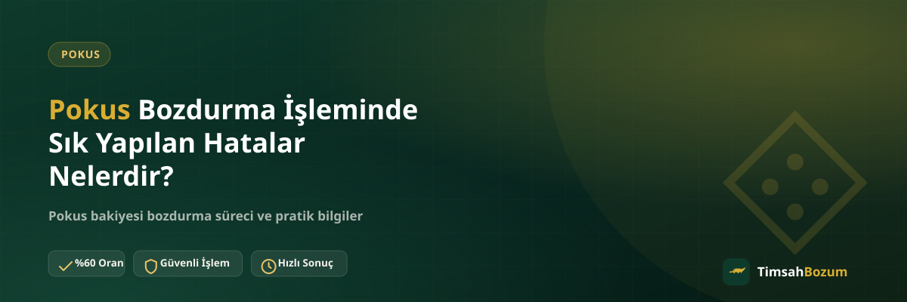

Pokus bakiyesi bozdurmak tek başına karmaşık bir işlem değil, ama birkaç küçük hata süreci gerekenden daha uzun sürdürebiliyor. Bazı kullanıcılar aynı hatayı tekrar tekrar yapıp işlemin neden gecikti diye merak ediyor. Bu yazıda, Pokus bozdurma işleminde en çok karşılaşılan hataları ve bunlardan nasıl kaçınacağını anlatıyoruz.
Pokus Bozdurmada Hatalar Neden Süreci Yavaşlatır?
Pokus bakiye tabanlı bir hizmet olduğu için süreç, hesabındaki güncel bakiyenin doğru şekilde gösterilmesine dayanır. Paylaşılan bilgi eksik, eski veya belirsizse, karşı taraf aynı bilgiyi tekrar istemek zorunda kalır. Bu da işlemi iptal etmez ama gereksiz yere uzatır. Aşağıdaki hatalardan kaçınmak, işlemini ilk mesajdan itibaren hızlandırır.
Eski veya Bulanık Ekran Görüntüsü Paylaşmak Güvenilir mi?
En sık yapılan hata, bakiye ekranının güncel tarihli olmayan veya net okunmayan bir görüntüsünü paylaşmak. Birkaç saat önce alınmış bir ekran görüntüsü bile, bu süre içinde bakiye değişmişse yanlış bilgi vermiş olabilirsin. Paylaşmadan önce ekran görüntüsünü yeniden almak, tutarın ve tarihin okunaklı görünmesine dikkat etmek işlemi baştan sağlam bir temele oturtur.
Bakiyeyi Güncellemeden İşlem Başlatmak Ne Olur?
Bazı kullanıcılar bir süre önce gördükleri bakiye rakamını hafızadan yazıyor, ekran görüntüsü almadan "bu kadar bakiyem var" diye mesaj gönderiyor. Bu durumda karşı taraf güncel bir görüntü istemek zorunda kalır ve süreç bir tur geriye düşer. Mesajı göndermeden önce uygulamayı açıp bakiyeni tazelemen, bu geri dönüşü baştan önler.
Oranı Teyit Etmeden Bilgi Paylaşmak Neden Hata?
Sitede yayınlanan oran genel bir referanstır; güncel oran işlem anında WhatsApp'tan teyit edilerek belirlenir. Bazı kullanıcılar oranı sormadan direkt bakiye bilgisini paylaşıp "ne kadar yapar" diye sonradan soruyor. Bu sıralamayı tersine çevirmek, yani önce oranı teyit edip sonra bilgiyi paylaşmak, işlemi daha öngörülebilir hale getirir.
SMS Doğrulama Kodu Paylaşmaya Çalışmak Güvenli mi?
Bozum işlemi hiçbir aşamada SMS doğrulama kodu istemez. Bazı kullanıcılar işlemi hızlandırmak amacıyla kendiliğinden bu kodu paylaşmayı deniyor; bu hem gereksiz hem riskli bir adım. Böyle bir kod istendiğini düşünüyorsan ya da paylaşman gerektiğini sanıyorsan, bu durumu dolandırıcılık şüphesi olarak değerlendirip işlemi durdurman gerekir.
Resmi Olmayan Numaralardan İşlem Yapmaya Çalışmak
TimsahBozum işlemleri yalnızca resmi WhatsApp hattından (+90 543 887 21 71) yürütülür. Instagram DM'i veya farklı bir numaradan gelen bir teklife bilgi paylaşmak, hem yanlış bir hatta yazmış olmak hem de dolandırıcılık riski taşımak anlamına gelir. Resmi numarayı siteden veya iletişim sayfasından doğrulamak, bu hatayı baştan engeller.
Çalışma Saatleri Dışında Israrla Mesaj Göndermek Ne Değiştirir?
TimsahBozum her gün 10:00-03:00 arası aktif. Bu saatler dışında gönderilen bir mesaj kaybolmaz, hat açıldığında sırasıyla yanıtlanır. Aynı mesajı art arda birkaç kez göndermek sırayı değiştirmez, sadece konuşma geçmişini karmaşıklaştırır ve asıl mesajın bulunmasını zorlaştırabilir.
Birden Fazla Bakiyeyi Ayrı Ayrı Bildirmek Zaman Kaybettirir mi?
Hem Pokus bakiyen hem başka bir hizmete ait bakiyen varsa, bunları tek mesajda toplu şekilde belirtmek süreci hızlandırır. Her birini farklı zamanlarda, ayrı ayrı mesajlarla bildirmek, karşı tarafın her seferinde konuşmanın neresinde kaldığını yeniden hatırlamasını gerektirir. İlk mesajında hangi hizmetlerden ne kadar bakiye bozduracağını net şekilde yazman en pratik yol.
İlk Mesajda Hizmet Adını Belirtmemek Neden Gecikmeye Yol Açar?
Bazı kullanıcılar sadece "bozum yapıyor musunuz" yazıp bekliyor, hangi hizmeti (Pokus, Razer Gold, Paycell vb.) bozduracağını belirtmiyor. Bu durumda karşı taraf önce hangi hizmetten bahsettiğini sormak zorunda kalır ve işlem bir mesaj turu geriden başlar. İlk mesajında "Pokus bakiyem var" diye açıkça belirtmen, sürecin doğru yerden başlamasını sağlar.
Oranı Öğrendikten Sonra Vazgeçmekten Çekinmek Gerekir mi?
Bazı kullanıcılar oranı sormaktan çekiniyor, çünkü işlemi iptal edemeyeceğini düşünüyor. Oran teyidi bir sözleşme değil, sadece bilgilendirmedir. Güncel oranı öğrendikten sonra işlemi yapmak istemezsen, bakiye bilgin kullanılmadan süreç orada kapanır. Bu yüzden oranı sormadan önce tereddüt etmene gerek yok; asıl hatalı olan oranı hiç sormadan bilgiyi paylaşıp beklemeye geçmek.
Ekran Görüntüsünü Yazıyla Değiştirmeye Çalışmak Neden Önerilmez?
Bazı kullanıcılar ekran görüntüsü almak yerine bakiyesini yazıyla anlatmayı tercih ediyor: "yaklaşık şu kadar bakiyem var" gibi bir ifade kullanıyor. Bu, tutarın tam olarak teyit edilmesini zorlaştırır ve karşı tarafın net bir ekran görüntüsü istemesine yol açar. Rakamı tahmini yazmak yerine, uygulamayı açıp o anki bakiyeyi gösteren bir görüntü paylaşmak her zaman daha hızlı sonuç verir.
Bu Hatalardan Kaçınmanın En Kısa Yolu
Özetle, güncel bir ekran görüntüsü hazırlamak, oranı işlem öncesi teyit etmek, bilgini yalnızca resmi WhatsApp hattından paylaşmak ve SMS doğrulama kodu gibi bir talebe asla yanıt vermemek, Pokus bozdurma sürecinin sorunsuz ilerlemesini sağlayan en temel adımlar. Bu noktalara dikkat ettiğinde işlemin çoğu zaman tek bir mesaj turunda sonuçlandığını göreceksin. Yukarıdaki hataların hiçbiri işlemi imkansız hale getirmiyor, sadece gereksiz yere uzatıyor; bu yüzden ilk mesajını göndermeden önce bu listeyi bir kez gözden geçirmen zaman kazandırır.
Pokus bakiyeni bu noktaları göz önünde bulundurarak bozdurmak için WhatsApp hattımıza güncel ekran görüntünle yazabilirsin.
İlgili Yazılar
- Pokus Bozdurma İşlemi Ne Kadar Güvenli?
- Pokus Bakiye Ekran Görüntüsü Nasıl Doğru Paylaşılır?
- Pokus Bakiyesi Bozdurmadan Önce Kontrol Etmen Gerekenler